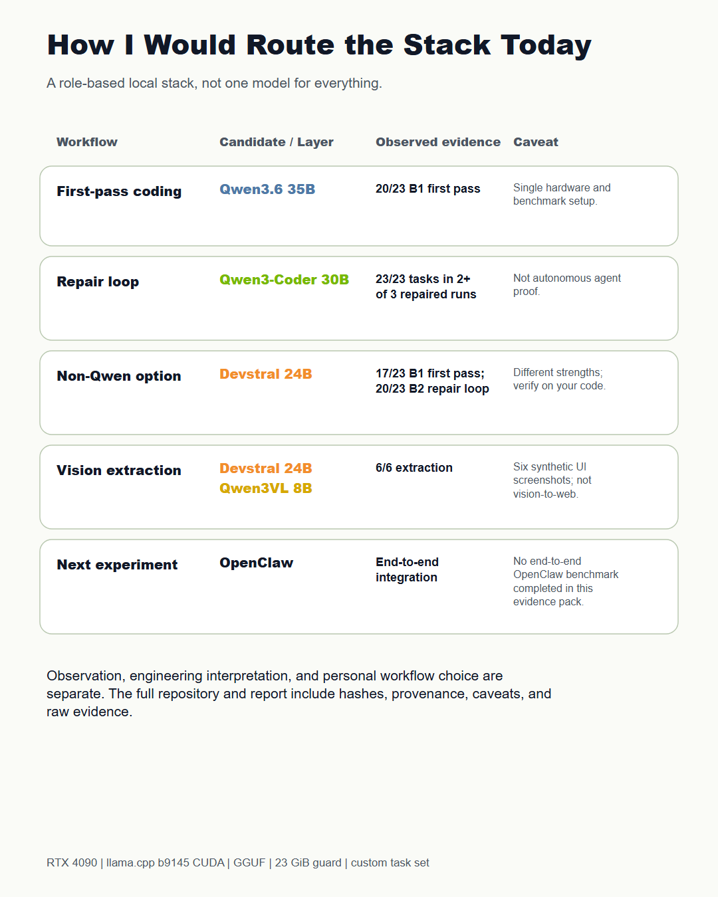
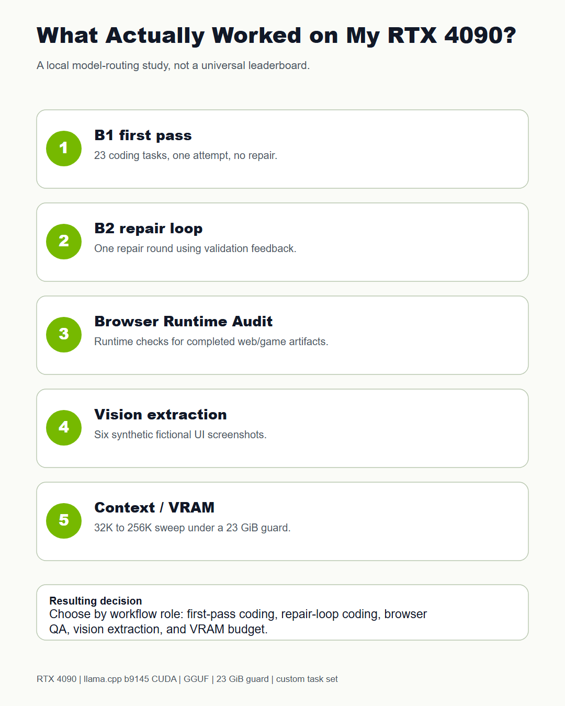
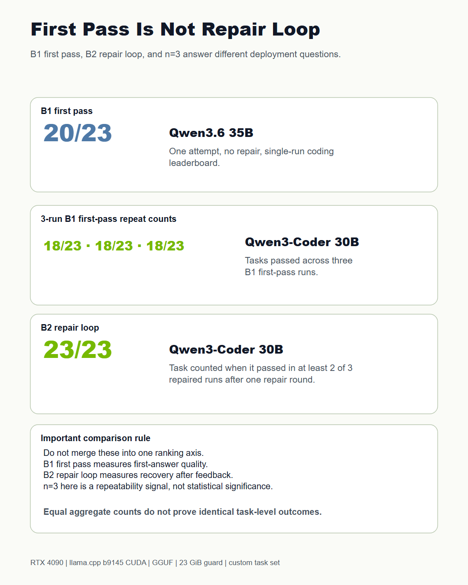
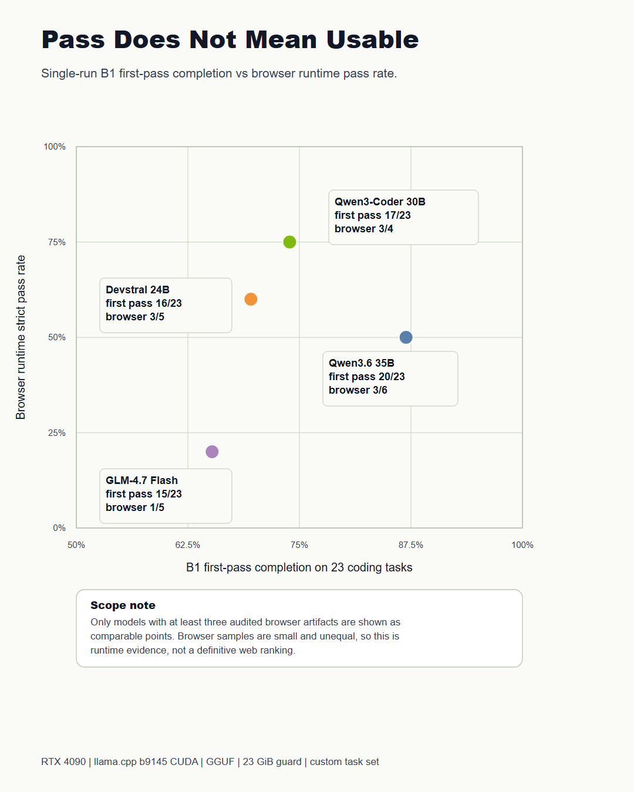
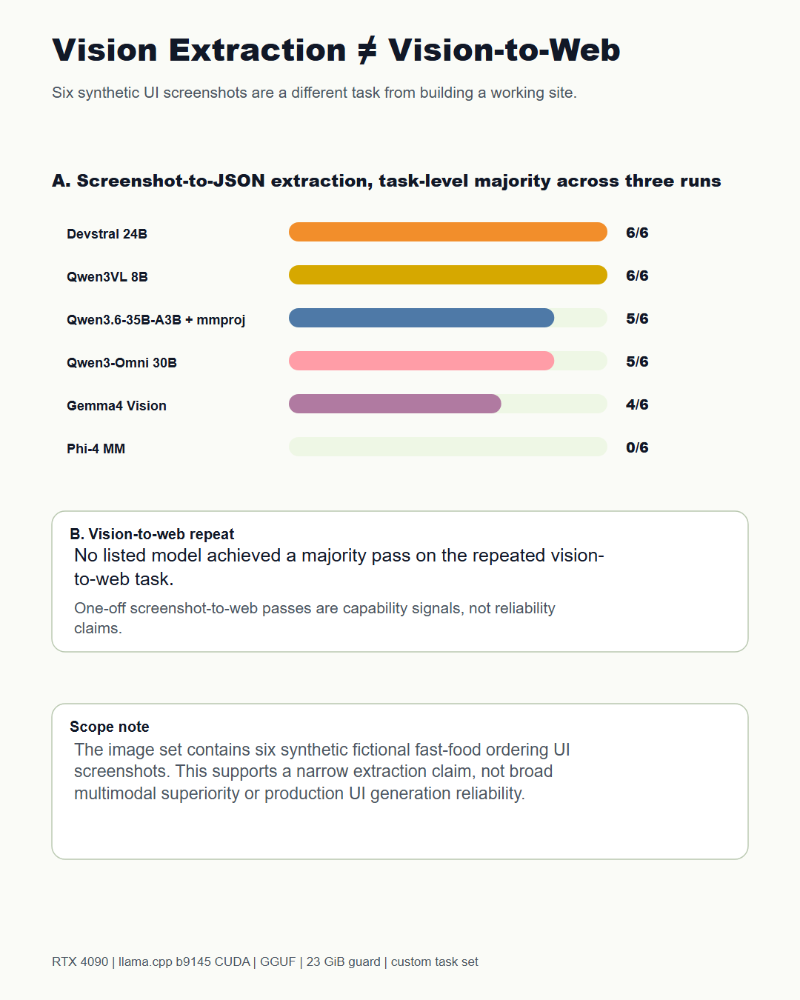
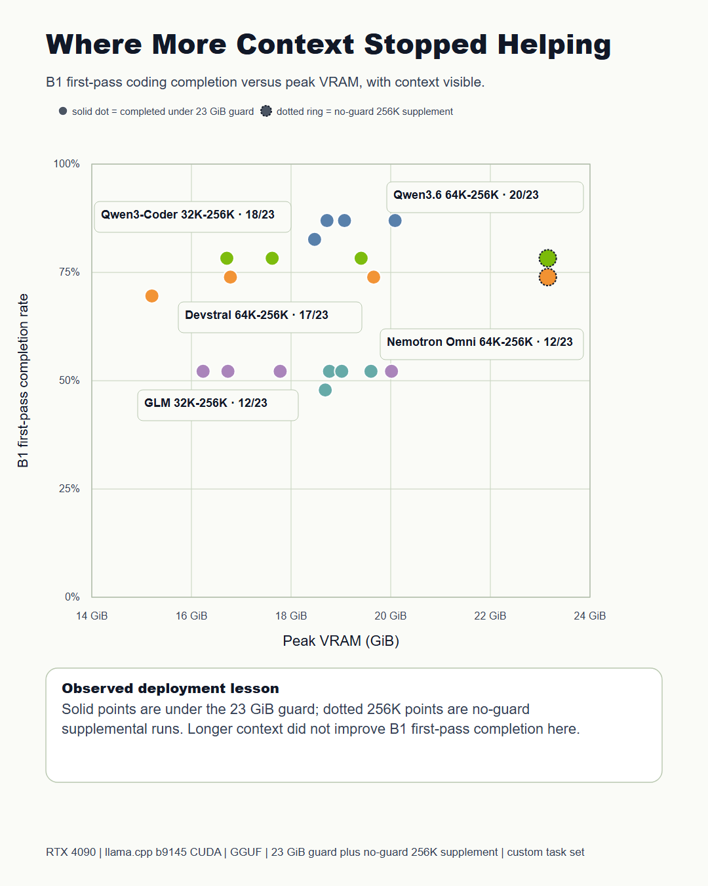

RTX 4090 Local LLM Workflow Benchmark
A practical local workflow study for coding, repair loops, browser runtime validation, vision extraction, and context and VRAM limits.
Executive Summary
This package evaluates local GGUF models on one RTX 4090 workstation through a llama.cpp based local harness. The goal is practical model routing, not a universal public leaderboard.
Key Findings
Practical Routing Summary
The routing matrix summarizes observed choices under this single hardware and task setup. OpenClaw-style end-to-end integration remains a future experiment, not a completed benchmark.

Main Charts





Evidence Links
Limitations
This is one workstation, one benchmark harness, one custom synthetic task set, and one practical scoring protocol. Results can change with runtime settings, model quantization, prompts, validators, GPU memory policy, and repair strategy.